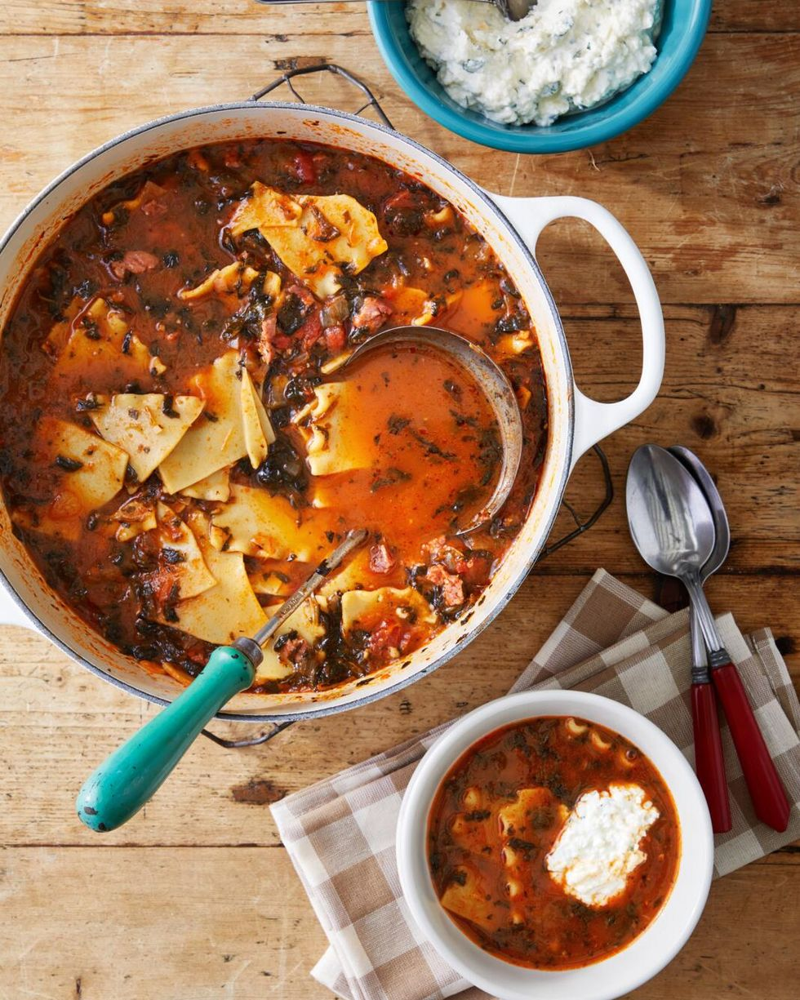

Lasagna Soup

Ingredients
- 1 olive oil
- 1/2 yellow onion, chopped
- 1 clove garlic, chopped Kosher salt and freshly ground black pepper
- 1 lb, sweet sausage, casings removed
- 2 tbsp. tomato paste
- 1 tsp. dried oregano
- 1 tsp. dried basil
- 1(24-ounce) jar marinara sauce
Directions
- Step 1
Heat oil in a large Dutch oven or pot over medium heat.
Add onion and garlic. Season with salt and pepper. Cook, stirring occasionally,
until softened, 4 to 6 minutes. Add sausage and cook, breaking it into pieces,
until browned, 5 to 7 minutes. Add tomato paste, oregano, and basil, and cook,
stirring, 1 minute. Add marinara and stock; bring to a boil. Add noodles and spinach.
Cook until noodles are soft, 10 to 12 minutes.
Step 2
Meanwhile, combine ricotta, mozzarella, and Pecorino in a bowl.
Serve soup with 1 to 2 dollops of cheese mixture on top.
Return